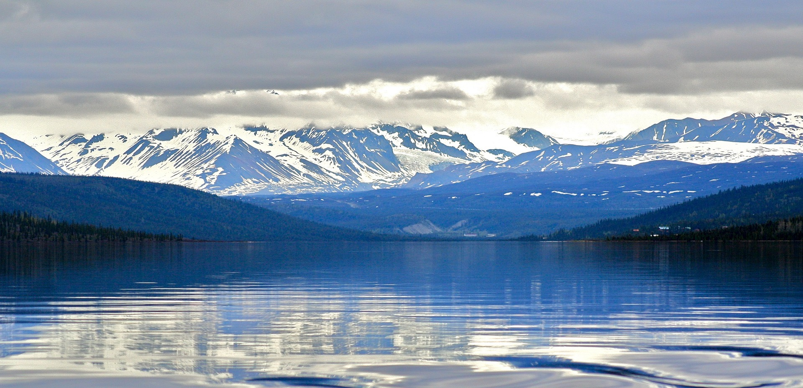

US Representatives
Don Young
State Representatives
Ben Carpenter
Matt Claman
Harriet Drummond
David Eastman
Bryce Edgemon
Zach Fields
Niel Foster
Mel Gillis
Sara Hannan
Grier Hopkinsr
Sharon Jackson
Delena Johnson
Jennifer Johnston
Andy Josephson
Gary Knopp
Chuck Kopp
Jonathan Kriess-Tomkins
Bart Lebon
Gabrielle LeDoux
John Lincoln
Kelly Merrick
Mark Neuman
Dan Ortiz
Mike Prax
Lance Pruitt
Sara Rasmussen
George Rauscher
Laddie Shaw
Ivy Spohnholz
Andi Story
Louise Stutes
Colleen Sullivan-Leonard
Dale Talerico
Geran Tarr
Steve Thompson
Cathy Tilton
Chris Tuck
Sarah Vance
Adam Wool
Tiffany Zulkosky
US Senators
Lisa Murkowski
Dan Sullivan
State Senators
Tom Begich
Click Bishop
John Coghill
Mia Costello
Cathy Giessel
Elvi Grey-Jackson
Lyman Hoffman
Shelley Hughes
Scott Kawasaki
Jesse Kiehl
Peter Miccichie
Donny Olson
Lora Reinbold
Josh Revak
Mike Shower
Bert Stedman
Gary Stevens
Natasha Von Imhof
Bill Wielechowski
David Wilson
Governor
Mike Dunleavy
Lieuenant Governor
Kevin Meyer

Alaska
Sample pol page
Alaska Government Website